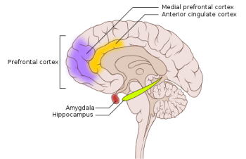

12.6: Post-Traumatic Stress Disorder
Experiencing extremely stressful or traumatic events, such as combat, crimes, and natural disasters, increases the risk of developing psychological disorders such as post-traumatic stress disorder (PTSD). A diagnosis of PTSD requires that the individual must be exposed to actual or threatened death, serious injury, or sexual violence. This strict diagnostic criterion differs from a common misperception that PTSD could stem from lesser stressors, like an upsetting but non-violent romantic breakup. PTSD symptoms include intrusive memories and flashbacks, avoidance of trauma-related stimuli, persistent negative emotions (e.g., fear, anger, guilt, shame), detachment, irritability, outbursts, and an exaggerated startle response (jumpiness). For PTSD to be diagnosed, these symptoms must occur for at least one month.
Roughly 6% of adults in the United States experience PTSD in their lifetime, with rates about twice as high in women than in men (Goldstein et al., 2016; Olff, 2017). Higher rates occur among people exposed to mass trauma and whose jobs involve duty-related trauma exposure (e.g., police officers, firefighters, and emergency medical personnel) (APA, 2013). Nearly 21% of residents of areas affected by Hurricane Katrina had PTSD one year following the hurricane (Kessler et al., 2008), and 12.6% of Manhattan residents were observed as having PTSD 2–3 years after the 9/11 terrorist attacks (DiGrande et al., 2008).
Neural Mechanisms Underlying Post-Traumatic Stress Disorder
Both the hippocampus and amygdala are involved in emotional processing and are linked to PTSD (Figure 9). Individuals with PTSD show reduced volume of several parts of the hippocampus, which may result from decreased levels of neurogenesis and dendritic branching (the generation of new neurons and the generation of new dendrites in existing neurons, respectively) (Wang et al., 2010). After effective pharmacological treatment or cognitive-behavioral therapy for PTSD, hippocampus size increases (Bremner & Vermetten, 2004; Levy-Gigi et al., 2013).
Recent work highlights how threat reactivity, the hippocampus, and arousal-related norepinephrine (NE) release may interact to shape PTSD severity. Prior work highlights how threat reactivity (i.e., how someone responds to threat-related stressors) is heightened in PTSD. Research in both animals and humans indicates that norepinephrine, a hormone released in response to stress, is associated with abnormal threat reactivity in PTSD (Naegeli et al., 2018; Southwick et al. 1999). Critically, threat alters hippocampal functioning, and a reliable neural signature of PTSD is reduced hippocampal activity during states of threat (Eichenbaum, 2001; Hayes et al., 2011). To clarify how threat may disrupt hippocampal functioning, a recent review proposed that threat-induced arousal increases norepinephrine release, which redirects information processing away from the hippocampus to emotional memory structures like the amygdala (Clewett & Murty, 2019).
The Advanced Understanding of RecOvery afteR traumA (AURORA) study is a multi-site study tracking brain and cognitive development in trauma patients for one year after an emergency department visit (McClean et al., 2020). This landmark effort will generate a comprehensive collection of brain, biospecimen, and behavioral measures to characterize trauma-related disorders, such as PTSD.
One AURORA study (Tanriverdi et al., 2022) examined the relationship between threat reactivity, hippocampus function, norepinephrine systems, and PTSD symptoms. Participants with more severe PTSD symptoms showed weaker hippocampal responses to threat; that link was especially strong in those with greater fear-based startle responses (a marker of arousal-related norepinephrine release). This suggests excessive threat-induced arousal may divert processing from the hippocampus. These findings highlight the interplay between threat reactivity, arousal, and hippocampal function in how PTSD may or may not emerge after exposure to trauma. Finally, whether or not PTSD emerges after trauma is also influenced by genetics, as genes play an important role in the fear and stress circuitry (Banerjee et al., 2017).

PTSD Treatments
Several treatment approaches are available to alleviate the symptoms of PTSD (Bridley & Daffin, 2024). Treatment usually starts with a psychotherapeutic intervention, such as:
- Psychological debriefing, wherein individuals who experienced a traumatic event discuss or process their thoughts within 72 hours of the event.
- Cognitive Behavioral Therapy (CBT) works by identifying and challenging the negative cognitions (thoughts) surrounding the traumatic event and replacing them with positive, more adaptive cognitions.
- Exposure Therapy involves a therapist exposing the individual to cues or situations associated with their traumatic memory, then having them use positive coping strategies such as relaxation techniques to reduce their feelings of distress. Exposure therapy, originally developed for anxiety disorders, has proven effective in treating PTSD by helping patients extinguish fears associated with traumatic events. The main types of exposure techniques are imaginal (mentally recreating the trauma), in vivo (using tangible reminders, such as videos or images), and flooding (immediate exposure to most distressing elements). While imaginal and in vivo exposures follow a gradual approach, flooding presents the most distressing memories upfront, potentially risking higher dropout rates. Some research indicates that combining exposure therapy with propranolol drug administration during memory retrieval can weaken the emotional aspects of traumatic memories (“reconsolidation interference” as discussed in the memory chapter) (Brunet et al., 2008; Beckers & Kindt, 2017).
- Eye Movement Desensitization and Reprocessing (EMDR) combines components of CBT and exposure therapy with lateral eye movements following a therapist’s finger movements. The eye movements are thought to accelerate information processing and the adaptive resolution of traumatic memories (Shapiro & Maxfield, 2002).
When psychotherapy does not produce relief from symptoms, psychopharmacology interventions are an effective second line of treatment and may include SSRIs, MAOIs, and tricyclic antidepressants.[1] Finally, recent research on psychedelic-assisted therapy, including treatments using MDMA (aka “ecstasy” or “molly”), psilocybin, and ketamine, has shown promise in effectively treating PTSD. In light of promising research, the U.S. Food and Drug Administration awarded MDMA “breakthrough therapy status” to fast-track studies on MDMA treatments of PTSD (Krediet et al., 2020; Mitchell et al., 2023).
Text Attributions
This section contains material adapted from:
Bridley, A., & Daffin, L. W., Jr., (2024). Fundamentals of Psychological Disorders. Washington State University. https://opentext.wsu.edu/abnormal-psych/ License: CC BY-NC-SA 4.0
Spielman, R. M., Jenkins, W. J., & Lovett, M. D. (2020). 10.4 Emotion. In Psychology 2e. OpenStax. Access for free at https://openstax.org/books/psychology-2e/pages/10-4-emotion License: CC BY 4.0 DEED.
Media Attributions
- Brain PTSD regions © Wikipedia is licensed under a CC BY (Attribution) license


- Parts of this section was adapted from: Bridley, A., & Daffin, L. W., Jr., (2024). Fundamentals of Psychological Disorders. Washington State University. https://opentext.wsu.edu/abnormal-psych/ License: CC BY-NC-SA 4.0 ↵
A psychological disorder that develops in some individuals who have experienced a traumatic event. It is characterized by intense, vivid memories of the traumatic event or related events and intense emotional and physical reactions.
(plural form, hippocampi)
A nucleus inside (medial) the temporal lobe implicated in learning and memory.
A neurotransmitter and hormone. Plays an important role in arousal and the “fight-or-flight” response. It is housed primarily in the locus coeruleus.